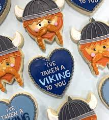

A quick snack, whether it be breakfast, lunch, or dinner!
In your large Nordic stone oven, use your flame bellower to heat the coals until a temperature of 375 Farenheit is reached.
Whisk together the flour, baking soda and salt in a large bowl, being careful not to split the bowl in half, as the baking soda from Alfheim tends to explode from time to time.
Using a large club, beat the butter and both sugars until they cry, or about 4 minutes. Then add eggs one at a time, again, beating until they cry. Add in vanilla, then the flour mixture that we discussed earlier.
Divide the dough into 12 tablespoons using your oversized Viking Axe that comes with every Nordic Cookbook sale, and roll into balls. Bake for 12 to 15 minutes, depending on how tough you want your cookies to be.
Take your cookies out of the oven, and let cool before enjoying. A word of warning though, the aroma of the freshly baked cookies will attract a herd of frost giants, Try to eat the cookies before they arrive, or all surrounding buildings will be stomped flat before you know it.